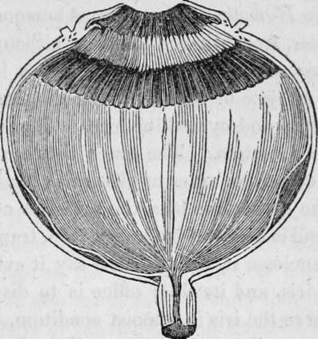

The Sense Of Sight. Part 3
Description
This section is from the book "Human Physiology For The Use Of Elementary Schools", by Charles Alfred Lee. Also available from Amazon: Human Physiology, for the Use of Elementary Schools.
The Sense Of Sight. Part 3
13. The iris then, regulates the quantity of light passing through the pupil. The pupil during sleep is in an intermediate state ; in inflammation of the brain it is generally contracted ; but when the functions of the brain are interrupted by narcotic poisons, the pressure of effused fluid, a tumour, or any other cause, the pupil is dilated. The bella donna, or deadly night shade, is employed by surgeons for this purpose, when they wish to couch, or perform other operations on the eye. The contraction of the pupil is readily seen by holding a candle close to the eye of a person, and then withdrawing it slowly ; or by directing a person to look at a very near object, and then at one more distant. Some persons can dilate and contract the iris at pleasure. I possess this faculty to a very great extent, and was conscious of it before I actually tried the experiment. The motion of the iris is not at all associated with that of the lids, as Walker suggests in his late excellent work on the Philosophy of Sight, the lids remaining the whole time perfectly stationary. I am, when contracting the iris, sensible of an effort similar to that of examining a very near object, and when dilating it, like that of looking on one at a distance ; but it is not necessary actually to look at any object in either case, nor do I attempt it. If this does not prove that the muscles of the iris are somewhat under the control of the will, then it cannot be proved that any muscles of the body are so.
14. The iris, in the lower animals, not only presents great diversities in colour, as has been stated, but also in form and mobility. In birds, and in the cat tribe, its motions are free and evidently voluntary; but in reptiles, its motions are obscure ; and in fishes imperceptible. In ruminants, in the horse, the marmot, in the whale tribe, and in owls, the goose, and the dove among birds, the pupil is elongated transversely or sideways. In the horse, a small square curtain hangs down, which intercepts a great portion of the rays coming from above. In the cat tribe, including the lion, the tiger, leopard, the lynx, the jaguar, etc. the pupil is elongated vertically, as it is also in the crocodile. Now we see a wise design in this arrangement, for in such animals as have to watch their prey, which is generally placed more above them, as on a tree, than at either side, the pupil is elongated vertically, so as to admit of more extended vision in such direction ; while in timid animals, like the ox, sheep, and hare, who have to guard against the insidious approach of enemies, while quietly grazing the fields, we find this arrangement reversed, and the pupil admits the greatest number of lateral rays.
15. Ciliary Processes
These are little folds or fringes of the choroid coat, which, joining the sclerotica near the cornea, (which union is termed the ciliary ligament) turn backwards and inwards, in the form of a circular, plaited fringe, the little threads of which are called the ciliary processes. They are covered, like the choroid, with the black pigment, and closely embrace the margin of the crystalline lens, forming round it an opaque blackened partition, which absorbs all the side rays of light, which might otherwise have disturbed the clearness of vision. These threads or processes are plaited like the folds of a ruffle, of which there are about 70 in the human eye, all arranged in a radiated manner round the lens, as represented in the following cut.
Fig. 5. Section of the eye magnified, showing the ciliary processes, the pig mentum nigrum, the retina, and the choroid coat
16. The ciliary processes are thus cellular and vascular, and some have thought muscular, in order to give support to the weight of the crystalline and vitreous bodies, to keep them from falling towards the iris, or into the aqueous humour. To accomplish this, we find them placed immme diately in front of the vitreous humour, and closely embracing the circumference of the crystalline lens, and then to strengthen the slender materials of which it is formed, we find it implanted in little furrows on the surface of the vitreous body, glued as it were to it, and adhering to it very firmly. We know that very substantial fabrics are made by plaiting and matting together very slender and flimsy substances, as straw, chip, and grass to form hats ; and it is on this principle, doubtless, that the ciliary processes are impacted or plaited together.
17. Humours Of The Eye
The humours of the eye have been compared to the glasses of a telescope, and the coats to the tube which keeps them in their places. They are three in number, and though all are perfectly transparent, they differ in density, and in the space which they respectively occupy.
18. Aqueous Humour
The aqueous humour is as clear as the purest water, from whence its name, although its specific gravity is greater ; containing, as it does, a little albumen, gelatine, and muriate of soda. It fills the entire space between the cornea and cyrstalline lens. The iris floats in it, suspended like a curtain. The space between the iris and the cornea is called the anterior chamber ; and that between the iris and the crystalline lens, the posterior chamber of the eye. This fluid is secreted by a very thin, transparent membrane which encloses it, though some say it exhales from the vessels of the iris, and its chief office is to distend the cornea, and preserve the iris in a moist condition, fit for the discharge of its appropriate functions. This fluid is also in a constant state of secretion and absorption; for when entirely discharged, in extracting the lens, for cataract, we find that in a few hours it will be restored again. In old age, its quantity is lessened, and the eye becomes flatter, needing the aid of convex glasses. Fishes have no aqueous humour at all, as the water, in which they swim, answers the same purpose, as this was designed for, in land animals.
Continue to:
Tags
humans, anatomy, skeleton, bones, physiology, organs, nerves, brain